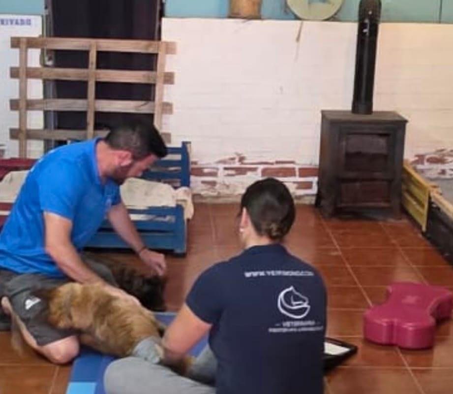
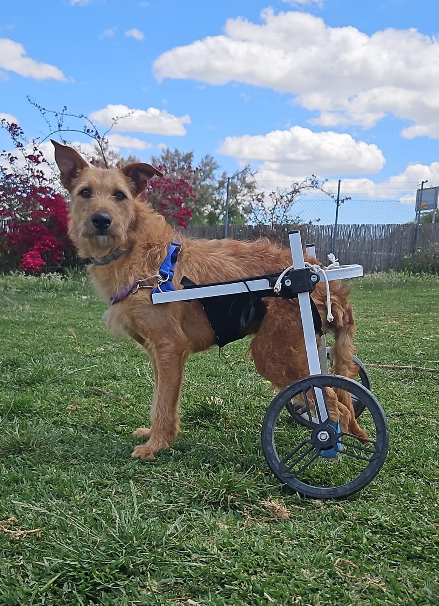
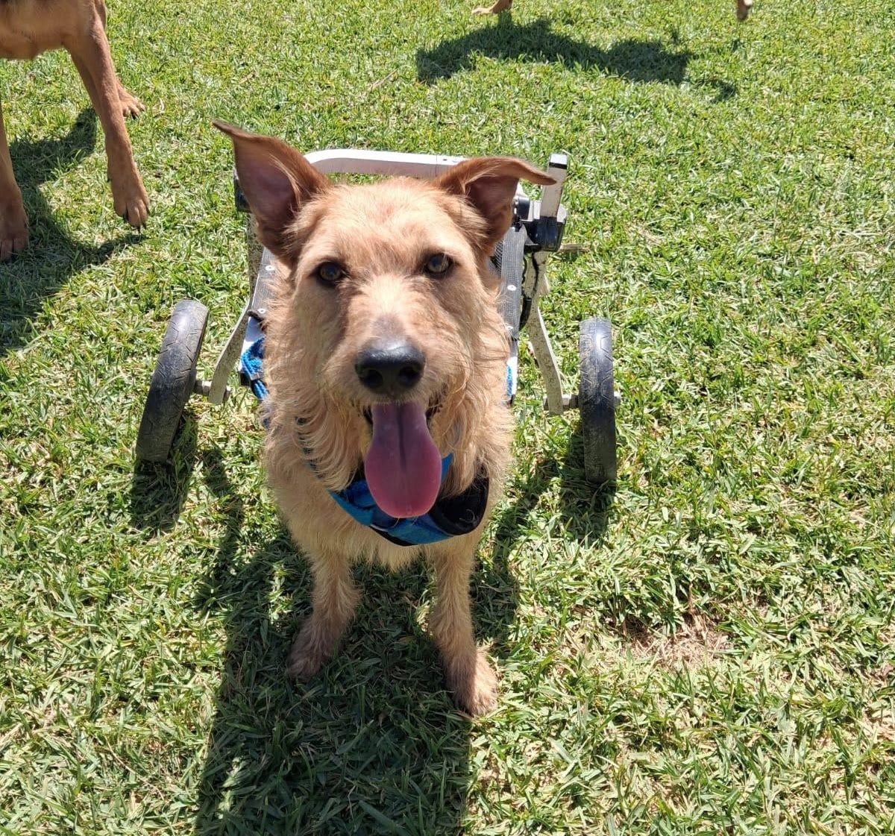

Rescates, cuidados y nuevas oportunidades
Historias reales
Cada rescate es un camino compartido. Estas historias cuentan la fuerza de los animales y el apoyo de quienes les ayudan.
Vida
Una historia digna de ser conocida
Hace un año, nos avisaron de que había un perrito cachorro macho que se arrastraba por no poder mover las patas de atrás después de recibir un disparo de balín en su espalda.
Fuimos avisados de la situación y pudo ser rescatado y llevado al veterinario urgentemente para valorar su lesión.
Se operó gracias a los donativos de mucha gente empática con el caso, pero a pesar de no tener lesión medular, las secuelas del hematoma que se produjo tras el impacto, ha requerido de una rehabilitación especializada que se está practicando desde hace 9 meses en la guardería de La Huella Azul de Cártama por una fisioterapeuta veterinaria que se desplaza semanalmente desde Málaga a dicho centro para conseguir que no dependa exclusivamente de la silla de ruedas para desplazarse y pueda consecuentemente realizar una vida como se merece.
Queremos hacer mención especial a la Asociación PELUDOS SIN TECHO de Lleida por el donativo de la silla.



En estos momentos...
Hoy el pequeño VIDA es feliz realizando grandes avances, pero necesita ya una buena familia que lo quiera para siempre de verdad y se implique en su proceso de recuperación.
La situación actual: la guardería es pagada por las aportaciones de un grupo de madrinas y la rehabilitación es sostenida con las RIFAS que hacemos y con donativos de personas que tras conocer la situación deciden ayudarnos para seguir dando voz a los que no la tienen.
Juntos podemos cambiar la historia de muchas Almas Bellas.
¿Quieres colaborar? Escríbenos por WhatsApp